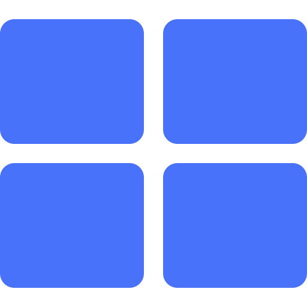
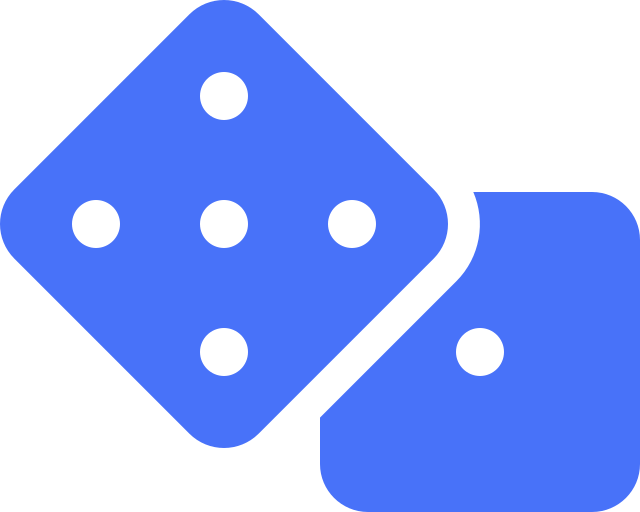
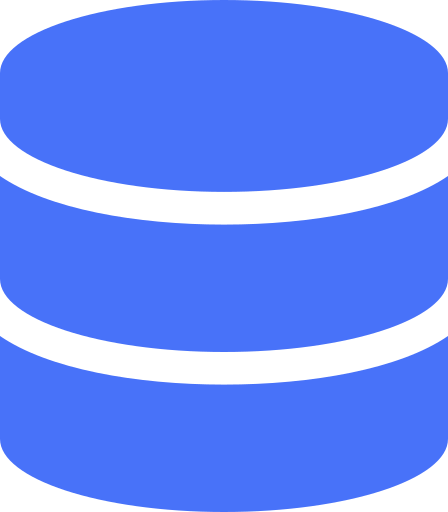

Adaptive Experimentation Platform
Key Features

Modular
Easy to plug in new algorithms and use the library across different domains.

Supports A/B Tests
Field experiments require a range of considerations beyond standard optimization problems.

Production-Ready
Support for industry-grade experimentation and optimization management, including MySQL storage.
Get Started
- Install Ax:
- Linux
- Mac
pip3 install ax-platformconda install pytorch torchvision -c pytorch
pip3 install ax-platform - Run an optimization:
>>> from ax import optimize
>>> best_parameters, best_values, experiment, model = optimize(
parameters=[
{
"name": "x1",
"type": "range",
"bounds": [-10.0, 10.0],
},
{
"name": "x2",
"type": "range",
"bounds": [-10.0, 10.0],
},
],
# Booth function
evaluation_function=lambda p: (p["x1"] + 2*p["x2"] - 7)**2 + (2*p["x1"] + p["x2"] - 5)**2,
minimize=True,
)
>>> best_parameters
{'x1': 1.02, 'x2': 2.97} # true min is (1, 3)